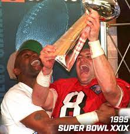
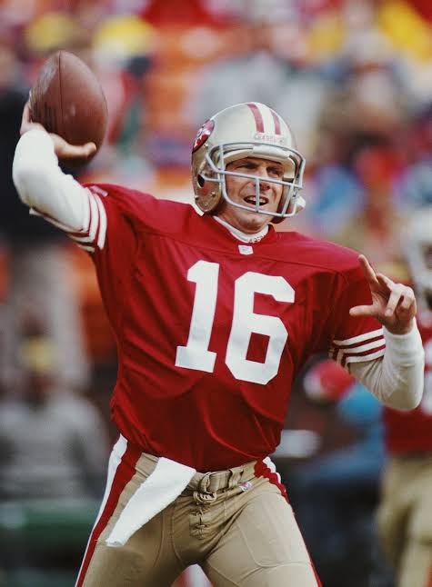
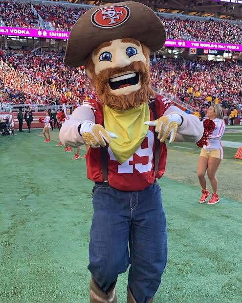

San Francisco 49ers
Historia del equipo
Los San Francisco 49ers, fundados en 1946, son conocidos por su dinastía de la década de 1980, donde dominaron la NFL con un juego espectacular.
Super Bowls ganados
Los San Francisco 49ers han ganado 5 Super Bowls en los años 1981, 1984, 1988, 1989 y 1994.
Mejor jugador de la historia
El mejor jugador en la historia de los 49ers es el mariscal de campo Joe Montana, ganador de cuatro Super Bowls y considerado uno de los mejores de todos los tiempos.
Mascota del club
La mascota oficial de los 49ers es Sourdough Sam, un minero que representa la fiebre del oro de 1849.